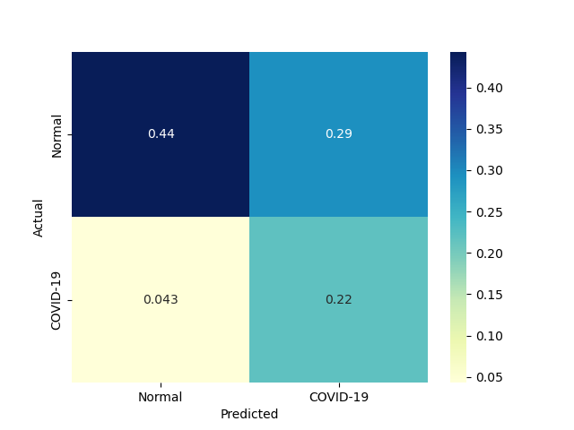
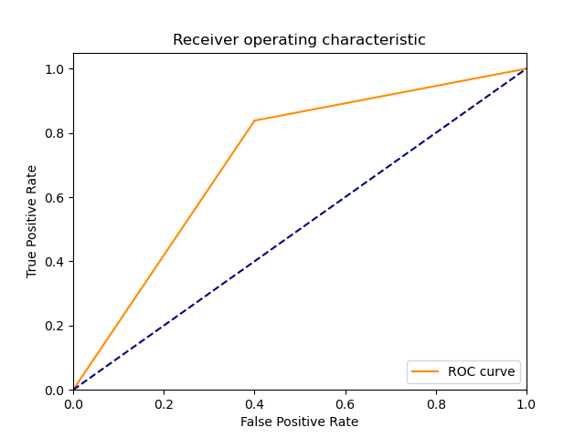

| 1 |
RealBoost |
An RealBoost classifier |
13834.664264 |
0.849586 |
672 |
2428 |
119 |
231 |
0.744186 |
0.953278 |
0.849558 |
0.898551 |
0.101449 |
0.793388 |
1.726966 |
0.000057 |
0.933853 |
 |
|
|
| 0 |
DiscreteNBC |
DiscreteNBC |
4644.068304 |
2606.359237 |
749 |
2067 |
480 |
154 |
0.829457 |
0.811543 |
0.609439 |
0.816232 |
0.183768 |
0.702627 |
1.202144 |
0.000151 |
0.000270 |
|
 |
|
| 4 |
GaussianNBC |
Gaussian Naive Bayes (GaussianNB) |
47.736402 |
22.833743 |
723 |
1799 |
748 |
180 |
0.800664 |
0.706321 |
0.491502 |
0.731014 |
0.268986 |
0.609099 |
0.949267 |
0.012760 |
0.026675 |
|
 |
 |
| 2 |
BernoulliNBC |
Naive Bayes classifier for multivariate Bernoulli models |
99.680678 |
6.681330 |
721 |
1672 |
875 |
182 |
0.798450 |
0.656459 |
0.451754 |
0.693623 |
0.306377 |
0.577031 |
0.874939 |
0.005789 |
0.086365 |
 |
 |
 |
| 3 |
ComplementNBC |
The Complement Naive Bayes classifier described in Rennie et al |
98.154893 |
3.879571 |
755 |
1530 |
1017 |
148 |
0.836102 |
0.600707 |
0.426072 |
0.662319 |
0.337681 |
0.564486 |
0.830900 |
0.005751 |
0.145502 |
 |
 |
 |
{kind=link}
{kind=link}
{kind=link}
{kind=link}
{kind=link}
{kind=link}
{kind=link}